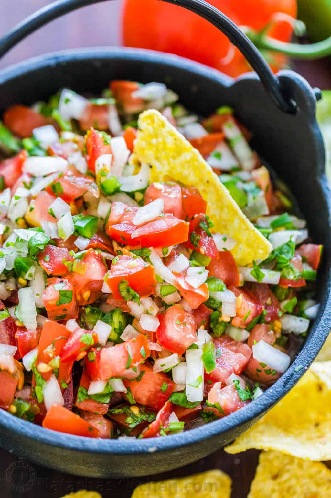

Home
How to do Pico de Gallo
Preparation
Step 1
In a medium bowl, diced tomatoes, onion, jalapeno pepper and chopped cilantro.
Step 2
Stir in 2 Tbsp lime juice and lightly season with 1/2 tsp salt and 1/8 tsp black pepper, or season to taste. Enjoy right away or cover and refrigerate overnight.
Credits to Natasha Kravchuk
Finished product 